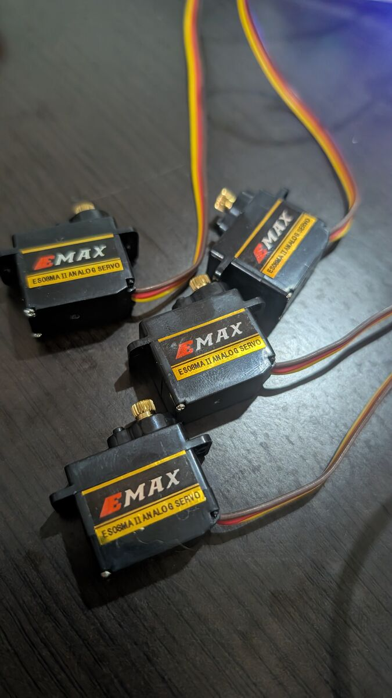
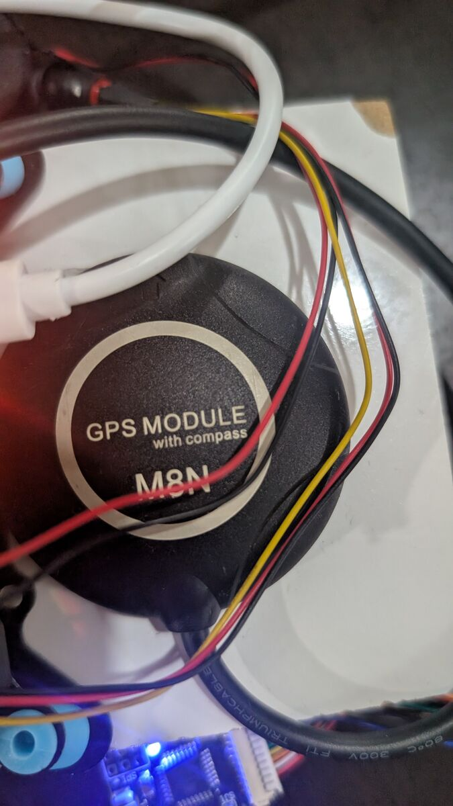
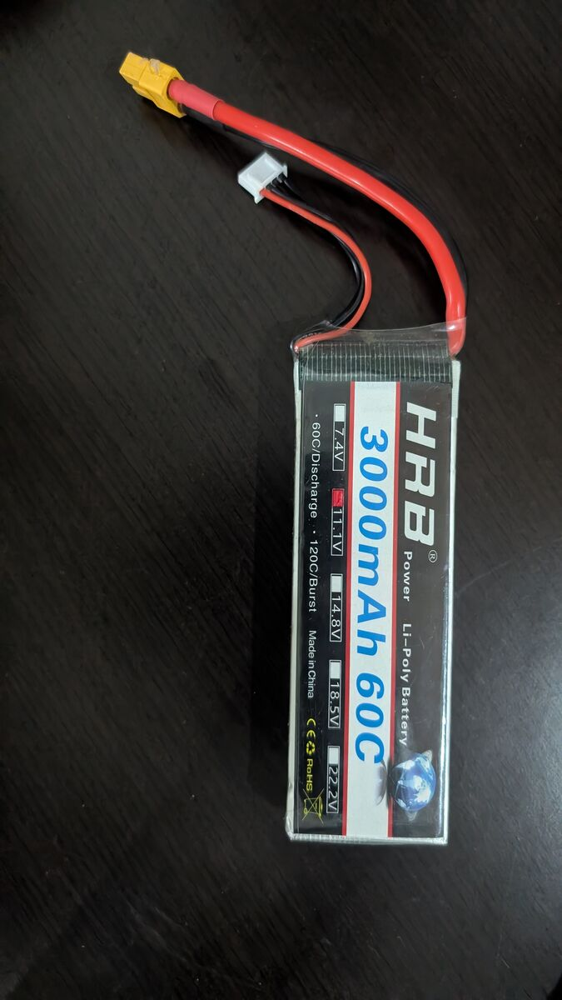
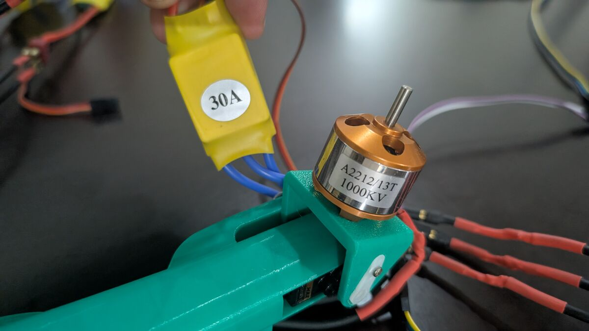
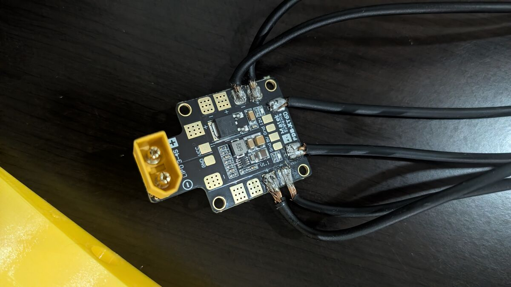
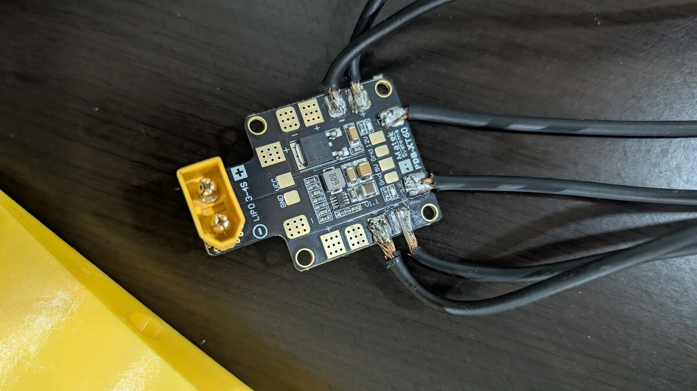
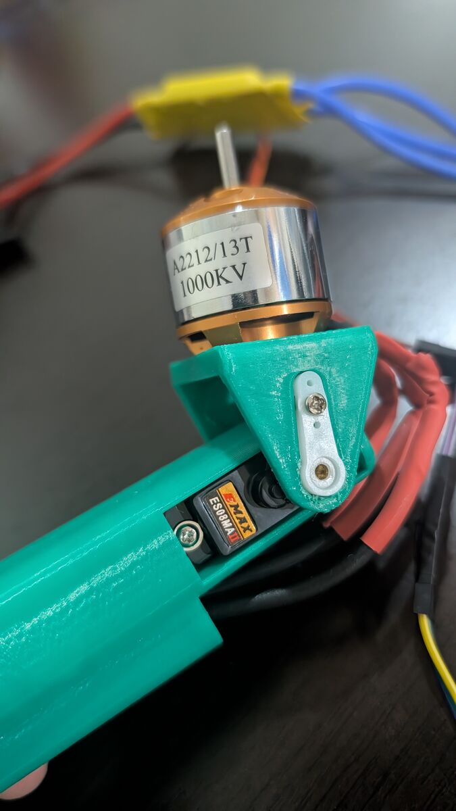
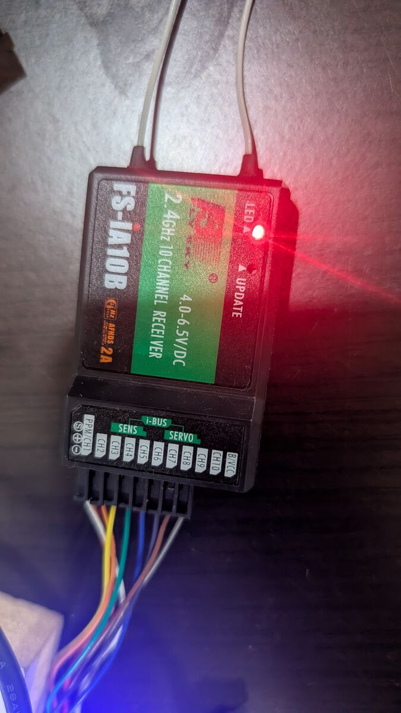
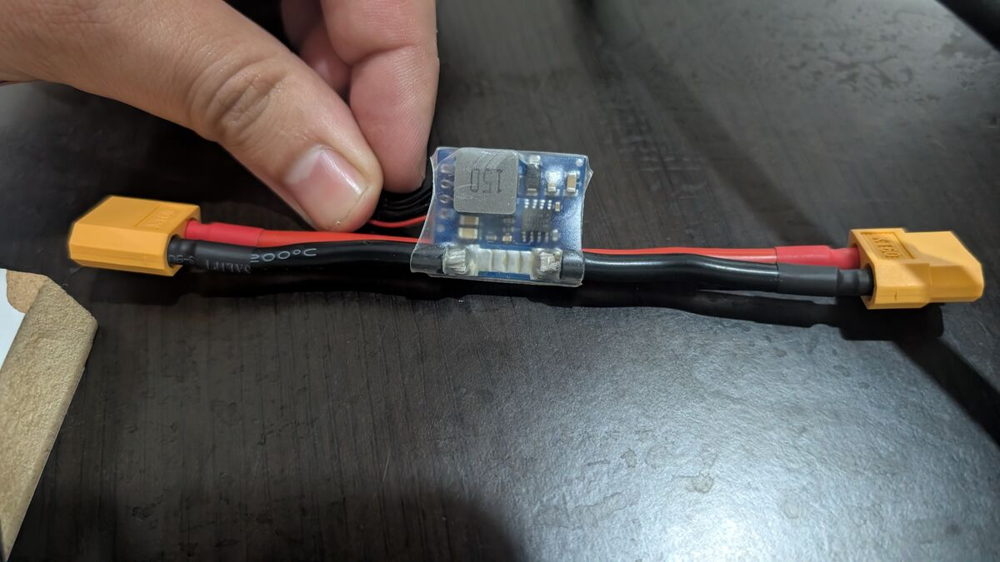
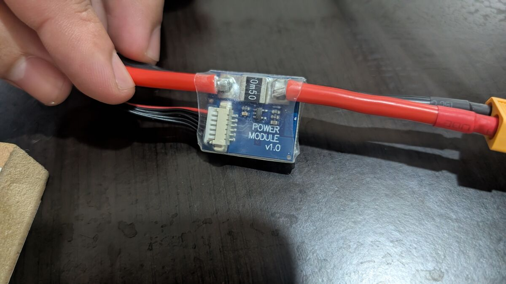

Outputs: plug in and test the servos (then the motors)
Connect the 6 servos and 3 ESCs to the right Pixhawk outputs, power the servo rail, and check that every surface and tilt servo moves the right way. Servos first. Motors come at the end of this guide, props off.
ARMING_SKIPCHK = 16 (back to 0 before any flight). Backup: params_after-esc-cal.params.Your parts










Where everything plugs in
This matches the settings already on your Pixhawk (SERVOn_FUNCTION), so nothing has to be re-assigned.
| Pixhawk output | Plug in | Function on the Pixhawk | Range now (µs) |
|---|---|---|---|
| MAIN 1 | Left wing aileron servo | SERVO1 = Aileron (4) | 1100–1900 |
| MAIN 2 | Right wing aileron servo | SERVO2 = Aileron (4) | 1000–2000 |
| MAIN 3 | Left tail wing servo | SERVO3 = VTailLeft (79) | 1000–2000 |
| MAIN 4 | Right tail wing servo | SERVO4 = VTailRight (80) | 1000–2000 |
| MAIN 5 | ESC, front right motor (M1) | SERVO5 = Motor1 (33) | 1000–2000 |
| MAIN 6 | ESC, front left motor (M2) | SERVO6 = Motor2 (34) | 1000–2000 |
| MAIN 7 | Leave empty | SERVO7 = 39 (auto, Tri yaw servo, unused on this airframe) | |
| MAIN 8 | ESC, tail motor (M4) | SERVO8 = Motor4 (36) | 1000–2000 |
| AUX 1 | Tilt servo, front left motor | SERVO9 = TiltMotorFrontLeft (75), reversed | ⚠️ 800–1940 |
| AUX 2 | Tilt servo, front right motor | SERVO10 = TiltMotorFrontRight (76) | ⚠️ 700–2100 |
Step 1: Plug in the servos (Pixhawk unplugged)
- Unplug the USB and the LiPo, so the Pixhawk is off.
- Each servo plug has 3 wires: brown/black = −, red = +, orange/yellow/white = signal.
- On the Pixhawk pin row, the signal pin is the top row (the side with the labels "MAIN OUT" / "AUX OUT"), + in the middle, − at the bottom (next to the board's base). So: orange/yellow on top, brown/black at the bottom.
- Plug in following the table: MAIN 1 left aileron, MAIN 2 right aileron, MAIN 3 left tail, MAIN 4 right tail, AUX 1 left tilt, AUX 2 right tilt.
- Plug the 3 ESC signal leads: MAIN 5 front right ESC, MAIN 6 front left ESC, MAIN 8 tail ESC (same orientation). Propellers OFF.
- ESC red wires (3-wire plugs): keep the red (5 V) wire only on the tail ESC (MAIN 8), which powers the servo rail. On MAIN 5 and MAIN 6, lift the plug's small plastic tab with a needle, pull the red wire's pin out, tape it. Two or three ESC BECs in parallel fight each other.
📸 Photo of the pin row with the plugs in (so the order and the orientation can be checked).
Step 2: Safe limits for the tilt servos (before they get power)
The old setup sends the tilt servos very far (AUX 1: 800–1940 µs, AUX 2: 700–2100 µs). Most servos stop around 900–2100 µs, and a tilt mount can hit its stops and strain the servo. For the first test we narrow them, then widen step by step once we see where the mount stops.
- USB in, wait 30 s, Parameters → Tools → Refresh.
- Set, one at a time (search, click, type, Save):
Parameter Now Set to (temporary) SERVO9_MIN800 1100 SERVO9_MAX1940 1900 SERVO10_MIN700 1100 SERVO10_MAX2100 1900
Step 3: Power the servo rail
The Pixhawk does not power the servo pins from USB or from the power module. The servos need 5 V on the rail (the middle + row) from a separate source. Two options with your parts:
| Option | How | Notes |
|---|---|---|
| A. One ESC's BEC | If your ESC signal plugs have 3 wires (with a red one), that red wire carries 5 V. Plug the tail ESC (MAIN 8) in: it powers the rail when the LiPo is connected. | Use only one ESC's red wire. The other two ESC plugs must have their red wire lifted out of the plug (tape it back), so BECs don't fight each other. |
| B. PDB 5 V BEC | A lead from the PDB's 5 V pads to any free + / − pins on the rail (for example MAIN 7's + and −, signal pin empty). | ⚠️ Never the PDB's 12 V output: 12 V destroys the servos and can damage the Pixhawk. |
Six metal-gear servos can draw 2–3 A when moving together. For flying, a dedicated 5–6 V UBEC of 3 A or more is the safest. For the bench test, A or B is fine.
Step 4: Test the wing and tail servos (FBWA)
- Props off. Transmitter on, switches up, throttle down.
- USB in, then the LiPo (to power the rail).
- Press and hold the safety button for 2 s until its light is solid. It is the small square red button with a light, on its own cable, plugged into the Pixhawk port SWITCH (not on the GPS). This only allows the outputs to move; it doesn't arm anything.
- SWC down (FBWA).
- QGC → Vehicle Configuration → Servo Outputs: each row shows the live Position of one output.
- Move the sticks and compare with the table (and the drawings):
Move Must happen Right stick → right Left aileron down, right aileron up Right stick ↓ (pulled back) Both tail wings up Left stick → right Right tail wing up, left tail wing down - A surface moves the wrong way? On Servo Outputs, tick Reversed on that output's row, and test again.
Step 5: Test the tilt servos
- SWC middle (QHOVER): both front motors must point straight up.
- SWC down (FBWA): both tilt forward slowly (about 25°/s).
- Back to middle: they tilt back up (faster, about 80°/s).
- Watch for buzzing at an end position: that means the servo pushes against a stop. Tell me which motor and which end.
Step 6: Switches and modes (done 2026-10-18)
What each control does now, and the setting behind it:
| Control | Action | Where it is set |
|---|---|---|
| Left stick ↑↓ (CH3) | Throttle of the 3 motors (only when armed) | Radio calibration |
| SWA (CH5) | Down = arm (motors allowed), up = disarm | RC5_OPTION = 153 |
| SWB (CH7) | Down = return home (RTL), up = back to the SWC mode | FlySky Aux. channels → Channel 7 = SwB + RC7_OPTION = 4 |
| SWC (CH6) | Up = QStabilize (drone, direct throttle) · middle = QHover (drone, holds height) · down = FBWA (airplane) | FLTMODE1/FLTMODE2 = 17, 3/4 = 18, 5/6 = 5 |
| Left stick ↓ + → 3 s | Arm (same as SWA down) | ARMING_RUDDER = 2 |
| Left stick ↓ + ← 2 s | Disarm | ARMING_RUDDER = 2 |
How it was done, one change at a time:
- Check the channels: QGC → Vehicle Configuration → Radio, Channel Monitor. Sticks = 1–4, SWA = 5, SWC = 6, SWB = nothing (not sent yet).
- Send SWB on channel 7 (FlySky): hold OK → Functions setup → Aux. channels → Channel 7 → SwB → hold CANCEL to save. Bar 7 in the Channel Monitor now jumps with SWB.
- SWB = return home: QGC → Vehicle Configuration → Flight Modes → Switch Options → Channel option 7 = RTL. The label turns yellow when SWB is down.
- Return home as a drone: Parameters →
Q_RTL_MODE= QRTL Always (3). Was 2 (VTOL approach: flies home as an airplane, then lands vertically). Drone-style is simpler while all flights are near you; switch back once airplane mode is proven. - SWC up = QStabilize: Flight Modes → Flight Mode 1 and 2 = QStabilize. Was QLand: the Pixhawk refuses to arm in QLand and ignores the throttle there, which is why the throttle did nothing.
- Stick arming: Parameters →
ARMING_RUDDER= ArmOrDisarm (2). Was 0 (off). Works together with SWA. Throttle must be fully down. - Backup: Parameters → Tools → Refresh, then Tools → Save to file →
backups/params_after-switches.params. All 5 changes verified in the file.
Step 7: Why the motors didn't spin (PreArm checks)
Motors only spin when the Pixhawk is armed. Before arming it runs a safety checklist (PreArm checks). If one item fails it refuses, so SWA, the stick and the throttle do nothing. This is the Pixhawk, not QGroundControl: QGC only shows the messages (click the status text in the top bar of the Fly screen, or the megaphone icon).
| Message | Meaning | Fix | Status |
|---|---|---|---|
Hardware safety switch | Red safety button not pressed | Hold it 3 s until solid. Locks again after every reboot | ✅ every boot |
QLand mode not armable | SWC up was QLand | Flight Mode 1/2 = QStabilize | ✅ fixed |
QRTL mode not armable | SWB was down | Keep SWB up to arm | ✅ normal |
RC calibrating | QGC's Radio page is open | Leave that page (go to Fly) | ✅ easy |
Battery 1 low voltage failsafe | The Pixhawk reads less than 10.5 V (BATT_LOW_VOLT) | Plug the LiPo (Step 8) | ✅ gone |
Compass not calibrated | Compass needs calibrating | Calibrated on the bench (Step 8). Redo outdoors for green | ✅ bench |
Board (4.2v) out of range | Pixhawk only on USB, voltage a bit low | Goes away with the battery + power module | ✅ gone |
Logging failed | No usable microSD card | Format it FAT32 (Step 8) | ✅ gone |
AHRS: not using configured AHRS type | Navigation filter waits for a GPS fix | Outdoors, open sky. Indoors: ARMING_SKIPCHK = 16 | ⚠️ skipped (bench) |
LI3S 3.0A 12.48V CHG 000:31 00013 = LiPo 3 cells, 3 A, 12.48 V now, 31 s, 13 mAh in. Full = 12.6 V. Never leave it unattended.Step 8: Clear the arming blockers (indoor bench)
One message at a time. Props off.
- microSD: on the computer, format the card FAT32 (cards up to 32 GB; bigger cards: exFAT). Put it back with the Pixhawk off. →
Logging failedgone. - Compass: Q logo → Vehicle Configuration → Sensors → Compass → OK. Rotate the plane slowly in every direction (nose up, nose down, each side, upside down) until Completed. Then Reboot Vehicle (also in Parameters → Tools → Reboot Vehicle) and keep the plane still for 30 s.
External HMC5883 compass calibrated, quality bar yellow: fine for the bench. Before the first flight, redo it outdoors away from metal (cars, tools, rebar) to get green.
- AHRS:
AHRS: not using configured AHRS type= the navigation filter waits for a GPS fix, which needs open sky. Indoors only: Q logo → Vehicle Configuration → Parameters → searchARMING_SKIPCHK→ tick only INS (value 16) → Save. - Battery: plug the LiPo → the low-voltage message is gone.
- Safety button: the small red button on the SWITCH port. Blinking = locked, solid = unlocked. Hold it 3 s. It locks again after every reboot.
ARMING_SKIPCHK = 16 lets the Pixhawk arm without GPS/navigation checks. Set it back to 0 before any flight.Step 9: ESC calibration (Q_ESC_CAL) (done 2026-10-18)
Why: each ESC must learn the throttle range: 1000 µs = stop, 2000 µs = full. Uncalibrated ESCs spin by themselves or seem dead.
- Battery unplugged, USB only, props off.
- Q logo → Vehicle Configuration → Parameters →
Q_ESC_CAL= 1 → Save. ARMING_SKIPCHK= 400 (INS 16 + Board voltage 128 + Battery level 256) → Save. Lets it arm without the battery.- SWC up (QStabilize).
- Press the safety button until solid.
- SWA down → QGC shows Armed.
- Left stick full up.
- Plug the battery. The ESCs beep twice = full throttle saved.
- Within about 2 s: left stick full down. 3 short beeps + 1 long = stop saved.
- SWA up (disarm).
- Restore:
Q_ESC_CAL= 0,ARMING_SKIPCHK= 16 → Save each.
Step 10: Modes and tilt behaviour explained
| SWC | Mode | Flies as | Front motors |
|---|---|---|---|
| Up | QStabilize | Drone | 90° (straight up) |
| Middle | QHover | Drone | 90° (straight up) |
| Down | FBWA | Airplane | Tilt forward |
Q_ASSIST_SPEED = 10 m/s) sees 0 airspeed and brings the VTOL motors in to help (message Transition started airspeed 0.0). Normal on the ground.Drone modes, armed: the front motors stay at 90° plus small yaw tilts, up to ±10° (Q_TILT_YAW_ANGLE, VectoredYaw). This is how the plane turns its nose as a drone, so it is required. ArduPilot scales the yaw tilt by hover throttle ÷ throttle (×2 at low throttle, ×0.5 at high), so on the bench at low throttle the tilt looks bigger. Disarmed: still, at 90°.
Step 11: SWB return home explained
- SWB down → QRTL (
Q_RTL_MODE = 3): climbs toQ_RTL_ALT= 20 m, flies home as a drone to the point where it was armed, lands vertically, disarms. - SWB up → you take back control (the SWC mode).
backups/params_after-esc-cal.params (saved 2026-10-18 after the ESC calibration). Verified against params_after-switches.params:
ARMING_SKIPCHK0 → 16 (bench only)- New compass calibration (
COMPASS_OFS_*,COMPASS_DIA_*,COMPASS_ODI_*,COMPASS_SCALE) and gyro offsets Q_M_THST_HOVER0.369 → 0.479: learned automatically while armed on the bench. Watch it: it may need resetting to about 0.37 before the first hoverQ_ESC_CAL= 0 confirmed
Still to do in this guide
- Throttle test (props off): tail motor and second front motor start and speed up like the others
- Spin direction of each motor
- Tilt servo end points:
SERVO9800–1940 reversed vsSERVO10700–2100. Read the live values in Servo Outputs in the up and forward positions, then adjust the end that is off (~10 µs ≈ 1°) - Redo the compass calibration outdoors for green
ARMING_SKIPCHK= 0 before any flight- SWB check outdoors (GPS fix): flight mode shows QRTL when SWB is down
Report back
- Photo of the pin row (step 1)
- Do your ESC signal plugs have 3 wires (with red) or 2?
- Which option for rail power (A or B)?
- Each surface direction OK, or which one is reversed
- Tilt servos: up / forward correct? Any buzzing?